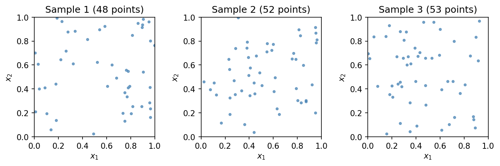
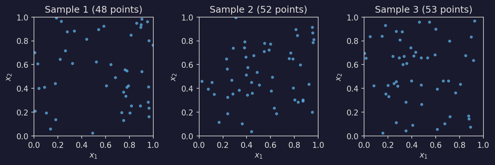

Point Processes#
The stablebear.point_process module provides samplers for spatial
point processes. All samplers support
deterministic seeding via Generator (see
Random Generation).
For uniform subsampling of existing point clouds or distance matrices, use
stablebear.random.subsample() (see Subsampling).
Poisson point process#
sample_poisson() generates point clouds from a
homogeneous spatial Poisson process. Each element of the output tensor is a
point cloud with a random number of points:
\[N \sim \text{Poisson}(\lambda \cdot V)\]
where \(\lambda\) is the rate (intensity) and \(V\) is the volume of the sampling region. Points are placed uniformly in the region.




Show code
def plot_poisson_samples(color="steelblue"):
from stablebear.point_process import sample_poisson
import stablebear as sb
gen = sb.random.Generator(seed=42)
X = sample_poisson((3,), dim=2, rate=50.0, generator=gen)
fig, axes = plt.subplots(1, 3, figsize=(9, 3))
for i, ax in enumerate(axes):
pc = np.asarray(X[i])
ax.scatter(pc[:, 0], pc[:, 1], s=8, color=color, alpha=0.7)
ax.set_xlim(0, 1)
ax.set_ylim(0, 1)
ax.set_aspect("equal")
ax.set_title(f"Sample {i + 1} ({pc.shape[0]} points)")
ax.set_xlabel("$x_1$")
ax.set_ylabel("$x_2$")
fig.tight_layout()
return fig
Basic usage:
from stablebear.point_process import sample_poisson
# 100 point clouds in R^2, rate 50, in the unit square
X = sample_poisson((100,), dim=2, rate=50.0)
# 3-D point clouds in a custom box, seeded for reproducibility
import stablebear as sb
gen = sb.random.Generator(seed=42)
X = sample_poisson(
(10, 20),
dim=3,
rate=100.0,
lo=[0.0, 0.0, -1.0],
hi=[1.0, 2.0, 1.0],
generator=gen,
)
By default the sampling region is \([0, 1]^d\). Custom bounds are specified
with lo and hi, each an array of length dim.